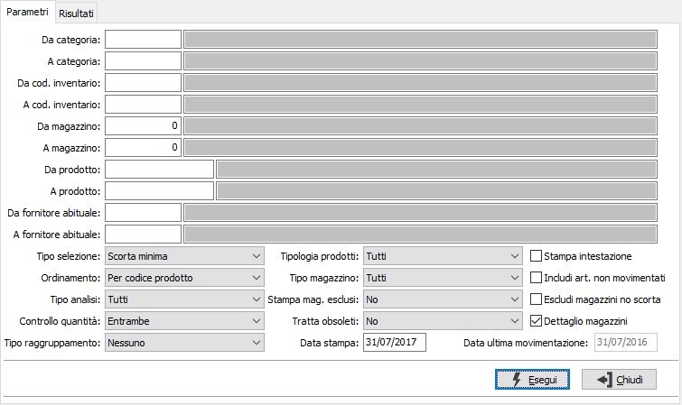
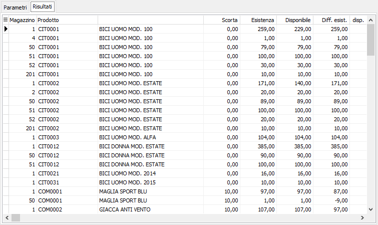

Analisi scorte
Il programma produce prospetti di analisi delle scorte minime o massime relativi a uno o più parametri di selezione forniti dall’utente.

DA CATEGORIA: eventuale codice della categoria merceologica da cui si vuole iniziare la selezione di analisi. Sul campo è attiva la ricerca (F9) sulla tabella Categorie merceologiche.
A CATEGORIA: eventuale codice della categoria merceologica con cui si vuole concludere la selezione di analisi. Sul campo è attiva la ricerca (F9) sulla tabella Categorie merceologiche.
DA COD. INVENTARIO: eventuale codice Inventario da cui si vuole iniziare la selezione di analisi. Sul campo è attiva la ricerca (F9) sulla tabella Codici inventario.
A COD. INVENTARIO: eventuale codice Inventario con cui vi vuole concludere la selezione di analisi. Sul campo è attiva la ricerca (F9) sulla tabella Codici inventario.
DA MAGAZZINO: eventuale codice del magazzino da cui si vuole iniziare la selezione di analisi. Confermando a vuoto, l’analisi inizia dal primo magazzino valido. Sul campo è attiva la ricerca (F9) sulla tabella Magazzini.
A MAGAZZINO: eventuale codice del magazzino con cui si vuole concludere la selezione di analisi. Confermando a vuoto, l’analisi termina con l’ultimo magazzino valido. Sul campo è attiva la ricerca (F9) sulla tabella Magazzini.
DA PRODOTTO: eventuale codice dell'articolo, presente in anagrafica Prodotti, da cui si desidera iniziare la selezione dei movimenti di magazzino. Confermando a vuoto, la selezione inizia con il primo prodotto valido. Sul campo è attiva la ricerca (F9) sull’anagrafica prodotti.
A PRODOTTO: eventuale codice dell'articolo, presente in anagrafica Prodotti, a cui si desidera terminare la selezione dei movimenti di magazzino. Confermando a vuoto, la selezione termina con l’ultimo valido. Sul campo è attiva la ricerca (F9) sull’anagrafica prodotti.
DA FORNITORE ABITUALE: eventuale codice del fornitore abituale dei prodotti da cui si desidera iniziare la selezione dei movimenti di magazzino. Confermando a vuoto, la selezione inizia con il primo codice valido. Sul campo è attiva la ricerca (F9) sull’anagrafica fornitori.
A FORNITORE ABITUALE: eventuale codice del fornitore abituale dei prodotti con cui si desidera terminare la selezione dei movimenti di magazzino. Confermando a vuoto, la selezione termina con l’ultimo codice valido. Sul campo è attiva la ricerca (F9) sull’anagrafica fornitori.
TIPO SELEZIONE: combo box per definire il tipo di scorta da considerare. Valori ammessi: sorta minima o scorta massima.
ORDINAMENTO PER: combo box per definire i criteri di ordinamento. Valori ammessi: Per prodotto; Per Magazzino.
TIPO ANALISI: combo box per determinare quali risultati stampare. Valori ammessi: tutti, fuori scorta o fuori scorta non disponibili.
CONTROLLO QUANTITÀ: combo box per determinare quale quantità deve essere utilizzata per effettuare il controllo; valori possibili: esistenza, disponibilità entrambe.
TIPO RAGGRUPPAMENTO: definisce un eventuale criterio di raggruppamento dei dati in stampa, valori possibili: nessuno, per categoria, per codice inventario, per fornitore abituale.
TIPOLOGIA PRODOTTI: combo box per definire la tipologia dei prodotti da elaborare. Valori ammessi: tutti, escluso prodotti fuori inventario, solo prodotti fuori inventario.
TIPO MAGAZZINO: combo box per definire la tipologia di magazzino da elaborare. Valori ammessi: tutti, di proprietà, di terzi.
STAMPA MAGAZZINI ESCLUSI: indica se nella selezione si desidera i magazzini normalmente esclusi dalla stampa dell’inventario. Valori ammessi: No, Si, Solo esclusi.
TRATTA OBSOLETI: definisce come se includere nell'analisi anche gli articoli obsoleti: Si, No, Solo obsoleti.
DATA DI STAMPA: indicare la data in cui viene stampata l'analisi (viene proposta la data di sistema, modificabile).
STAMPA INTESTAZIONE: indica se stampare una pagina con i criteri di selezione della stampa, l’operatore che l’ ha eseguita, la data e l’ora (casella con segno di spunta).
INCLUDI ARTICOLI NON MOVIMENTATI: definisce se includere nella selezione anche i prodotti che non hanno movimenti di magazzino (casella con segno di spunta).
ESCLUDI MAGAZZINI NO SCORTA: Definisce se escludere dall'analisi i magazzini per cui è spuntata la casella "Escludi da calcolo scorta'.
DETTAGLIO MAGAZZINI: se spuntata l'analisi riporterà analiticamente l'elenco dei prodotti suddivisi per magazzino.
DATA ULTIMA MOVIMENTAZIONE: questo parametro viene impostato in base al valore del campo "Num. giorni senza movimentazione" presente in configurazione magazzino ed è attivo se impostata la spunta su "Includi articoli non movimentati"; se questa data viene lasciata vuota il calcolo degli articoli non movimentati considera la data inizio esercizio precedente all'ultimo esercizio di magazzino aperto, altrimenti considera la data inserita.
La pressione del pulsante Esegui accede alla pagina dei risultati, da cui è possibile effettuare la stampa agendo sui pulsanti Anteprima o Stampa della toolbar.
